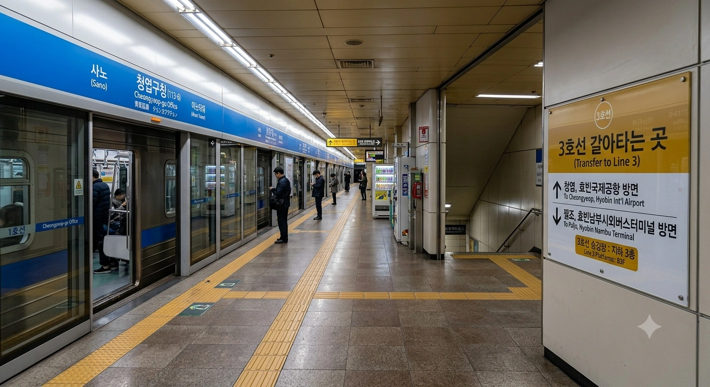
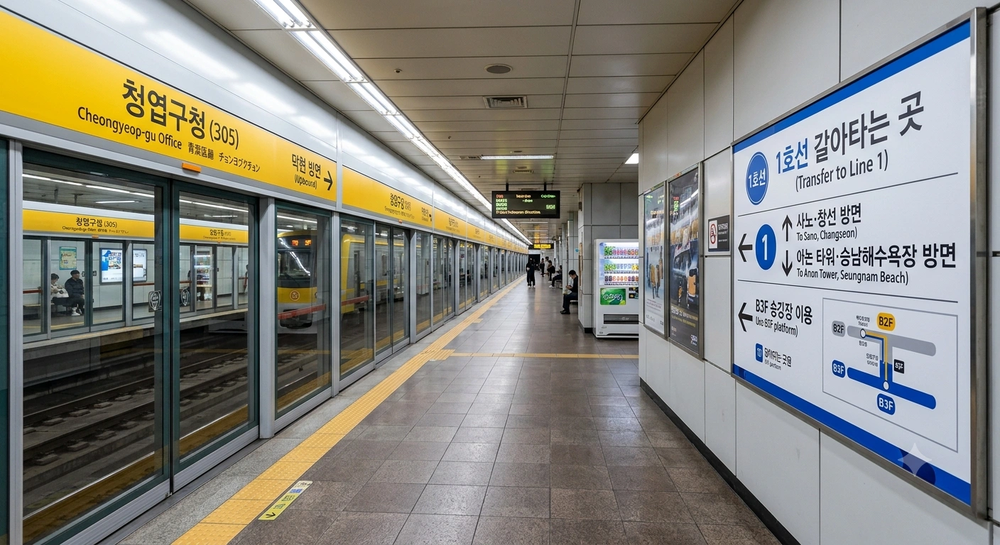

효빈 도시철도 1호선 113-6번 및 효빈 도시철도 3호선 305번. 효빈광역시 청엽구 청엽동 9-3지하 소재이다.
지하 2층에 효빈교통공사 공식 굿즈샵이 있다. 유독 고나미와 박라미, 그리고 아오바 모카 콜라보를 자주한다.
|
1
3
|
||
|---|---|---|
| 번호 | 주요 시설 및 방향 | 비고 |
| 1 | 청엽구청 | |
| 2 | 청엽구청오거리 | |
| 3 | 효빈청엽경찰서 | |
| 4 | 송엽상업고, 청엽5동행정복지센터 | |
| 5 | 왕교초등학교 | |
| 6 | 모카고등학교, 청엽6동행정복지센터 | |
※ 2면 3선 상대식 승강장 (중선 포함)

| 사노 ↑ | ||||
| 하행 | ㅣ | ㅣ | ㅣ | 상행 |
| ↓ 아논타워 | ||||
| 상행 | 1 효빈 도시철도 1호선 (완행/급행) | 사노 · 창선 방면 (급행 정차) |
| 하행 | 1 효빈 도시철도 1호선 (완행/급행) | 아논타워 · 승남해수욕장 방면 (급행 정차) |
※ 2면 2선 상대식 승강장

| 효빈남부시외버스터미널 ↑ | |||
| 하행 | ㅣ | ㅣ | 상행 |
| ↓ 청엽 | |||
| 상행 | 3 효빈 도시철도 3호선 (완행/급행) | 효빈남부시외버스터미널 · 팔조 방면 (급행 정차) |
| 하행 | 3 효빈 도시철도 3호선 (완행/급행) | 청엽 · 효빈국제공항 방면 (급행 정차) |
| 청엽구청역 이용객 통계 | ||||
|---|---|---|---|---|
| 연도 | 1호선 | 3호선 | 총합 | 비고 |
| 2020년 | 20,616명 | 25,834명 | 46,450명 | |
| 2021년 | 20,826명 | 25,675명 | 46,501명 | |
| 2022년 | 26,178명 | 32,051명 | 58,229명 | |
| 2023년 | 27,020명 | 33,999명 | 61,019명 | |
| 2024년 | 27,238명 | 34,932명 | 62,170명 | |
청엽역(3호선)과 청엽구청역(1호선/3호선)은 효빈광역시 청엽구 청엽동에 위치하며, 청엽구의 핵심 환승 거점이다. 이 역명인 청엽(靑葉)의 한자는 일본 미디어 믹스 프로젝트 뱅드림!의 캐릭터 아오바 모카(青葉モカ)의 성(姓)인 青葉(아오바)와 한자가 완벽하게 동일하다.
문화적 연결: 아오바 모카는 빵과 베이커리를 극도로 좋아하는 것으로 유명하며, 청엽구청역 일대는 대형 베이커리 및 카페 거리가 조성되어 있어, 역 이름의 동일성과 함께 '모카의 베이커리 성지(빵지순례)'로 팬들에게 알려져 있다.
팬들은 이 역에서 모카 굿즈와 함께 빵을 들고 인증 사진을 남기며 '유쾌한 연대'를 상징하고, 이는 청엽구의 상업 활성화와 문화적 포용력을 증진시키는 역할을 하고 있다.
이 역은 고립주의자 윤대환(전 효빈시장, 선거법 위반 및 살인미수 혐의로 징역형을 만기 출소한 직후)이 일으킨 초유의 '빵 테러' 굴욕 사건의 현장이다.
사건 경위: 2017년 출소 직후, 윤대환은 자신의 몰락 원인이 '외부 문화와의 연결'이라고 판단하여, 그 상징인 청엽역 및 청엽구청역 환승 구역 일대에서 '빵지순례'를 하던 모카 팬들에게 시비를 걸었다. 윤대환은 "도시 인프라를 하찮은 빵 쪼가리로 더럽힌다!"고 폭언하며 혐오 시위를 시도했다.
'빵 테러'와 윤대환의 굴욕: 이에 분노한 팬들은 모카의 상징인 빵 모양 굿즈와 실제 빵(모카빵, 메론빵 등)을 윤대환에게 향해 던지며 "빵이나 드시고 정신 차리라!"고 외쳤다. 윤대환은 빵에 맞아 대차게 당하며 팬들의 유쾌하고 단호한 문화적 연대 앞에서 무참히 패배하고 현장에서 도주했다.
모카 성우의 경악: 이 사건은 일본에 전해져, 아오바 모카의 성우가 라디오 방송에서 경악을 표했다. 성우는 "저, 세상에! 빵도 모자라 성지순례에도 시비를 걸다니! 그런 분들에게는 따뜻한 빵 한 조각이 줄 수 있는 행복과 포용을 가르쳐야 한다"며 윤대환의 혐오를 비판했다. 이 발언은 윤대환의 행위가 국제적인 조롱거리가 되었음을 상징한다.
윤대환이 징역 만기 출소 직후 빵에 맞아 쫓겨난 사건은 효빈대학교 에브리타임에서 큰 화제가 되었다.
효빈대 에타 반응: 학생들은 '살인미수 징역을 살고 나온 전 시장의 첫 행보가 빵에 맞고 도주하는 굴욕'이라는 점에 초점을 맞춰 조롱했다. "고립주의는 빵 한 조각이 상징하는 평화와 연대를 이길 수 없다", "청엽은 '푸른 잎(靑葉)'처럼 새로운 시작을 상징하는데, 윤대환은 영원히 썩은 뿌리에 머물 것" 등의 반응이 주를 이뤘다.
A의 형의 찌질한 반박: 윤대환의 아들이자 A씨의 형(같은 고립주의 성향)은 익명으로 답글을 달아 시위를 옹호했다.
A의 형 (찌질한 답글): "아버지(윤대환)는 공공 교통망을 더럽히는 불순한 문화 자본에 맞서 싸운 것이다! 빵을 무기로 사용하는 오타쿠들의 폭력이야말로 비난받아야 한다! 우리는 청엽의 순수성을 끝까지 지킬 것이다!"
A의 형의 이 찌질한 반박은 '윤대환 일가의 혐오 대물림'을 상징하는 사건으로 기록되었으며, 윤대환의 복귀가 아닌 추가적인 굴욕만을 가져온 사건으로 남게 되었다.